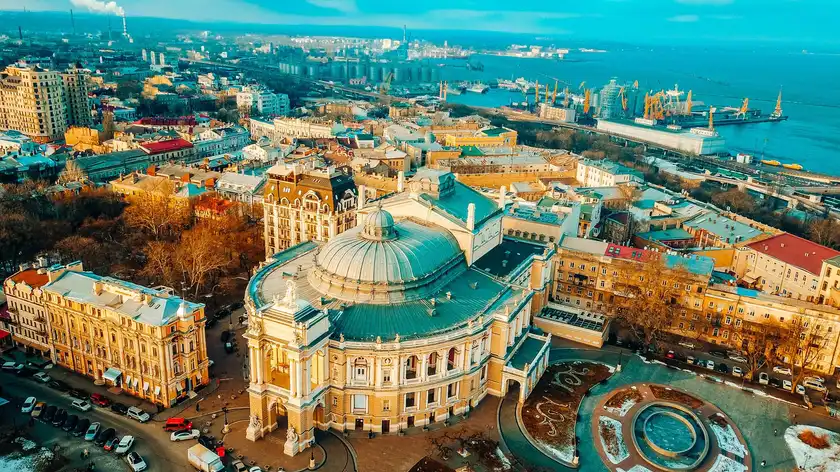
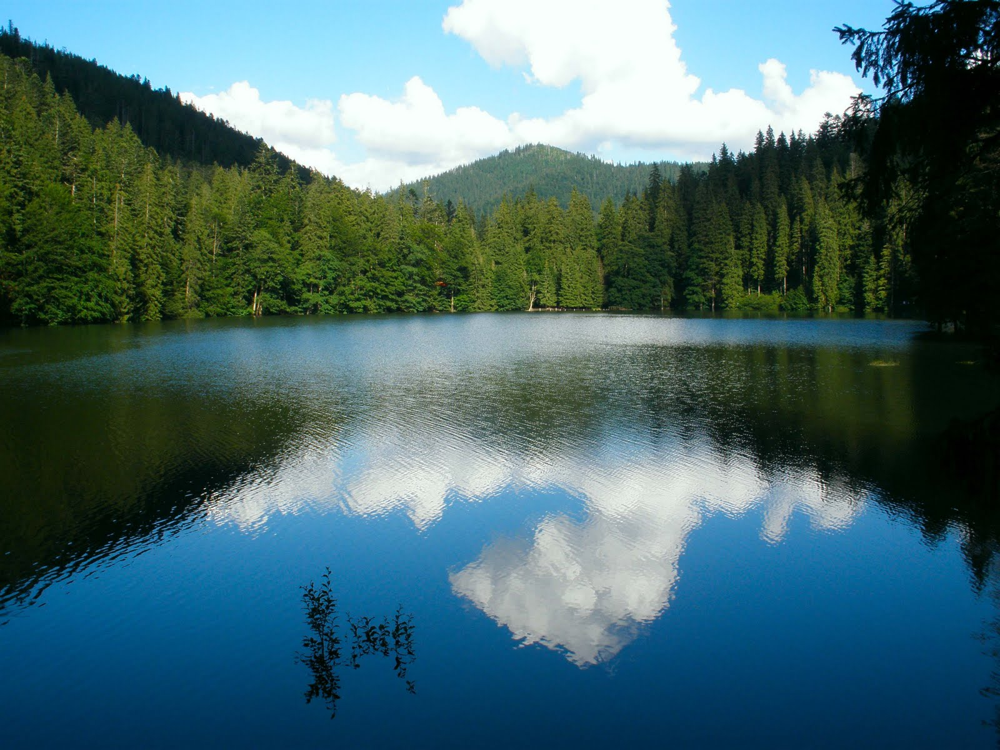
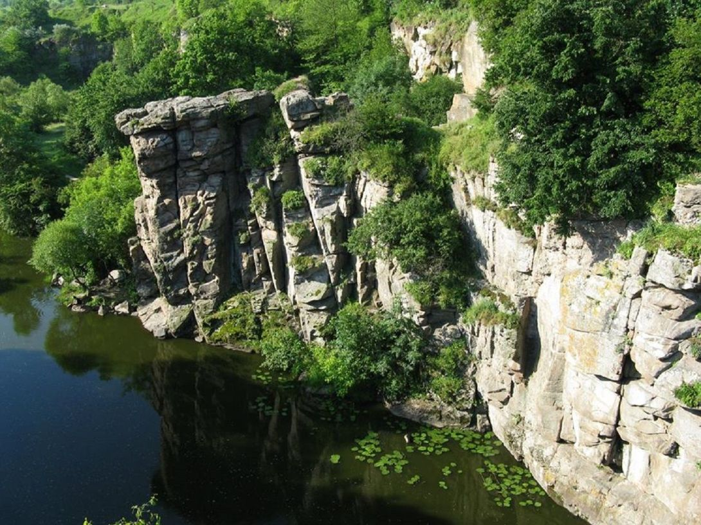

Україна
Про нас
Блог, де кожен може поділитися своєю історією та досвідом про подорожі Україною
Контакти
Ваші враження
Одеса-Мама
Україна має місто, де можна легко вийти із домівки і майже одразу нирнути у Чорне море. Я сподіваюсь, що кожна людина зрозуміла, що це рідна Одеса – мама. Місто, яке має надзвичайну енергетику завдяки своїм місцевим мешканцям. Велика кількість молдован та справжніх одеситів створюють неабиякий колорит. Кажучи чесно, одеситів чутно за кілометр, бо вони мають специфічний тип мовлення.
Синевір у Карпатах
Альпійські зелені гори з білястої шапкою, ароматними рослинами, тихими озерами і бурхливими річками знайомі багатьом. Але Карпати приготували не менше мальовничі краєвиди в тандемі з неймовірно теплою та відкритою гостинністю місцевих жителів. Вируючі гірські річки та водоспади заворожують, аромат ялиць, сосен та лугових трав ніжно обволікає, а мелодійний звук трембіт розноситься на багато кілометрів. При всій пишноті карпатської природи однієї з справжніх «родзинок» є озеро Синевир. Його води настільки чисті що навіть на найбільшій глибині видно дно водойми. Про це озеро місцеві розкажуть романтичну легенду і обов'язково прикрасять свою розповідь смачніми частуваннями. Можемо сказати одне: побувати в Карпатах і не відвідати Синевир – справжній злочин.
Буцький каньйон
Всього в 100 км від Києва, біля селища Буки, Маньківського району, Черкаської області, розкинулося дивно прекрасне місце назване українцями «маленькою Швейцарією». Буцький каньйон, який своїми скелястими берегами захищає спокій річки Гірський Тікич нагадує пейзажі скандинавських фіордів. Особливо чудово це місце в травневі дні, коли природа вбирається в соковиту і яскраву зелень, наповнюючись ароматом і ніжністю квітучих трав і диких тюльпанів. Неподалік від каньйону розташувався галасливий і не менш гарний водоспад, а ще трохи далі можна розглянути руїни старовинного млина ХІХ століття. Якщо вам до вподоби відпочинок на природі, рекомендуємо захопити з собою намет або набір для пікніка, благо відповідних для цих цілей місць тут не мало.
